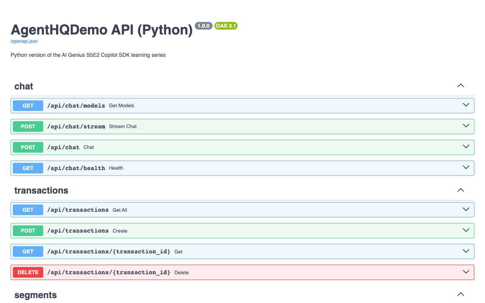

額外 — 擴充套件API¶
📎 額外實驗 — 不是 Copilot SDK 這涵蓋了 FastAPI、SQLModel 和 pytest 在示範應用程式中的範例。它測試了 Copilot 作為 程式碼助理但不涉及Copilot SDK。
目標： 使用Copilot新增一個新的端點及其測試，保持現有的30個測試為綠色，保留故意的程式碼氣味。
時間： 大約30分鐘
必要條件： 實作課程 01 — 環境設定 完成，Python應用可執行。 治理掛鉤 額外，保留這些掛鉤在你工作時啟用。
⚠️ 地板規則¶
- 不要修復四個故意的氣味。 稍後示範相依於它們。如果Copilot提出清理它們，
get_transactions_with_segments拒絕。 - 保持所有14個現有測試透過。 新測試增加到這個數字。
- 遵循現有的Python約定：薄路由、SQLModel/Pydantic DTOs、非同步服務方法、pytest.fixture和行為規則
AGENTS.md.
你將建置¶
GET /api/segments/summary —— 專案級別的統計資訊在所有分段上:
{
"totalSegments": 4,
"totalCustomers": 4660,
"weightedAverageRetention": 0.71,
"highestRetention": "High Value",
"lowestRetention": "At Risk"
}
故意地 不 一個簡單的透過：加權平均需要根據客戶數量來權重，這是值得進行測試的。
第 1 步 — 研究現有的形狀¶
cd src/AgentOrchestrator-python
cat app/routers/segments.py
cat app/services/retail_analytics.py
cat app/models.py
cat app/main.py
注意模式來映象:
APIRouter(prefix="/api/segments", tags=["segments"])- 相依注入透過
Depends(get_service) response_model=...在路由裝飾器上HTTPException(status_code=404)對於缺失的資源- 路由器保持薄；邏輯留在
RetailAnalyticsService app/main.py種子透過生命週期處理器並將其靜態UI附加在/最後，因此它不會遮蓋/api路由
第 2 步 — 知道 Python 的不同之處¶
模型 app/models.py 和使用 SQLModel⚠️ SQLModel跳過 table=True 驗證
TransactionBase; 兩者 Transaction (表) TransactionCreate (請求體)
JSON是 駝峰式命名 在傳輸過程中customerId，而不是 customer_id)透過Pydantic的 alias_generator=to_camel 設定。這故意保留了 curl 命令
測試使用pytest，與記憶體SQLite引擎， StaticPool 在
tests/conftest.py. StaticPool 保持每個連線指向同一記憶體資料庫，這是 OpenConnection() 在.NET側實作的。
第 3 步 — 新增 DTO¶
新增此回應模型到 app/models.py:
class SegmentSummary(BaseModel):
"""Portfolio-level statistics across all customer segments."""
model_config = CAMEL_CONFIG
total_segments: int
total_customers: int
weighted_average_retention: float
highest_retention: str
lowest_retention: str
A BaseModel 因為這是API形狀，而不是SQLite表。共享 CAMEL_CONFIG 保持回應為 totalSegments 和
weightedAverageRetention.
第 4 步 — 新增服務方法¶
Ask Copilot，給它前
Add an async get_segment_summary method to RetailAnalyticsService that returns a
SegmentSummary. Weight the average retention by customer_count, not a plain
mean. Handle the empty-segment case without throwing. Follow the existing
conventions in this file. Do not modify any other method.
你希望達到的形狀:
async def get_segment_summary(self) -> SegmentSummary:
segments = await self.get_segments()
if not segments:
return SegmentSummary(
total_segments=0, total_customers=0, weighted_average_retention=0,
highest_retention="", lowest_retention="",
)
total_customers = sum(s.customer_count for s in segments)
weighted = 0 if total_customers == 0 else (
sum(s.retention_rate * s.customer_count for s in segments) / total_customers
)
return SegmentSummary(
total_segments=len(segments),
total_customers=total_customers,
weighted_average_retention=round(weighted, 2),
highest_retention=max(segments, key=lambda s: s.retention_rate).name,
lowest_retention=min(segments, key=lambda s: s.retention_rate).name,
)
⚠️ 保護分隔帶。 total_customers 0 會丟擲錯誤。
第 5 步 — 新增端點¶
在 app/routers/segments.pyimport SegmentSummary 並新增：
@router.get("/summary", response_model=SegmentSummary)
async def summary(
service: RetailAnalyticsService = Depends(get_service),
) -> SegmentSummary:
return await service.get_segment_summary()
⚠️ 路由順序。 將 /summary 停止在您關心的第一個差分之前 /{segment_id}. FastAPI 路由在宣告順序中檢查，其他捕獲段路由可以訪問
summary 在驗證之前拒絕它為非整數 id。
第 6 步 — 寫測試¶
向 Copilot 請求服務測試，在 tests/test_retail_analytics.py:
Add pytest tests for get_segment_summary. Cover: the seeded four-segment case,
correct weighted average (not a plain mean), and an empty database returning
zeros without throwing. The fixture starts empty, so seed explicitly.
使用種子資料時：
| 客戶細分 | 客戶數 | 留存率 |
|---|---|---|
| 高價值 | 150 | 0.92 |
| 普通 | 3,200 | 0.78 |
| 有流失風險 | 890 | 0.45 |
| 新客戶 | 420 | 0.65 |
一個簡單的平均值給出 0.70. 加權數字是
(150×0.92 + 3200×0.78 + 890×0.45 + 420×0.65) / 4660 ≈ 0.71.
async def test_get_segment_summary_weights_retention_by_customer_count(
service: RetailAnalyticsService,
) -> None:
await service.seed_data()
summary = await service.get_segment_summary()
assert summary.total_segments == 4
assert summary.total_customers == 4660
assert summary.highest_retention == "High Value"
assert summary.lowest_retention == "At Risk"
assert summary.weighted_average_retention == 0.71
assert summary.weighted_average_retention != 0.70
💡 也新增一個空資料庫測試，斷言零總和和空字串
highest_retention 和 lowest_retention.
第 7 步 — 檢查和測試¶
預期結果： Ruff 退出乾淨並 pytest 報告 超過 14 透過，沒有 失敗。
⚠️ 如果一個以前透過的測試現在失敗了，那麼是你的新程式碼之外的某個東西改變了。檢查差異:
僅 app/models.py, app/services/retail_analytics.py,
app/routers/segments.py, 該測試檔案應該出現。
第 8 步 — 驗證它在串流中¶
curl -s http://localhost:5070/api/segments/summary | jq
curl -s http://localhost:5070/api/segments | jq 'length' # 4
curl -s http://localhost:5070/api/segments/predict/C003 | jq -r .predictedSegment
確認總結數字與表格中的數字相符。
因為FastAPI從你的型別註解中衍生出OpenAPI，新的路由也出現在互動式文件中， http://localhost:5070/docs 無需額外工作——你宣告的回應模型將成為文件中的描述模型：

💡 .NET學習路線透過其OpenAPI文件展示了相同的想法。不同之處在於，這裡的結構描述來自Pydantic模型和Python型別註解，而不是C#屬性。
第 9 步 — 重新檢查 HTTP 合同¶
FastAPI驗證在一種顯眼的方式下有所不同：無效輸入傳回HTTP 422， Pydantic錯誤體，而.NET版本傳回400。 實際驗證過的無效輸入輸出如下：
ModelState.
經過實際驗證的無效輸入輸出：
$ curl -X POST http://localhost:5070/api/transactions \
-H 'Content-Type: application/json' \
-d '{"customerId":"C777","amount":-5,"productCategory":"Grocery","storeId":"S001"}'
{"detail":[{"type":"greater_than_equal","loc":["body","amount"],"msg":"Input should be greater than or equal to 0.01","input":-5,"ctx":{"ge":0.01}}]}
有效的建立要求會傳回 HTTP 201。一次實際驗證的執行結果如下：
{"productCategory":"Grocery","customerId":"C777","amount":42.5,"isFlagged":false,"storeId":"S001","id":11,"timestamp":"2026-08-13T04:59:38.478798"}
清理和未找到資源時的行為：
curl -X DELETE http://localhost:5070/api/transactions/11 # HTTP 204, no body
curl -s http://localhost:5070/api/transactions/999
第 10 步 — 重新審查你的更改¶
copilot -p "Review my uncommitted Python changes for correctness, FastAPI route ordering, SQLModel/Pydantic validation, and pytest coverage. Report only." --allow-all-tools
然後更新根目錄中的 API 表
README.md
，列出新端點——文件與實作不一致同樣屬於評審問題。
✅ 檢查點¶
- [x] 已新增新的回應 DTO、服務方法和端點
- [x] 測試已覆蓋加權平均值和空資料情況
- [x] 原有的 30 項測試仍全部透過
- [x] 四處有意保留的程式碼異味均未改動
- [x] 已針對執行在 5070 埠的 API 驗證端點
- [x] 現有的驗證、建立、刪除和 404 行為仍符合預期
💡 延伸挑戰¶
新增 GET /api/transactions/summary 時，請檢查 get_transactions_with_segments 的 N+1 模式是否會悄然出現，並以不會引入該問題的方式實作。